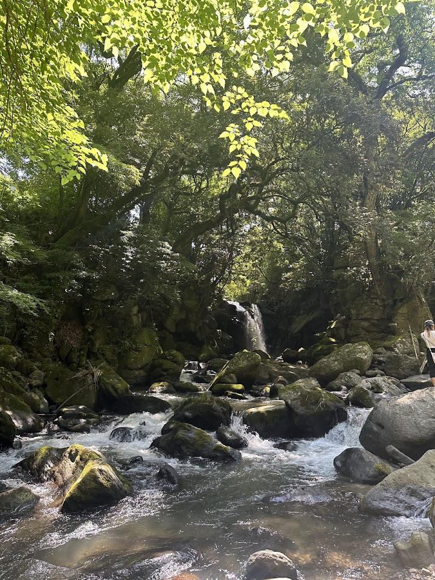
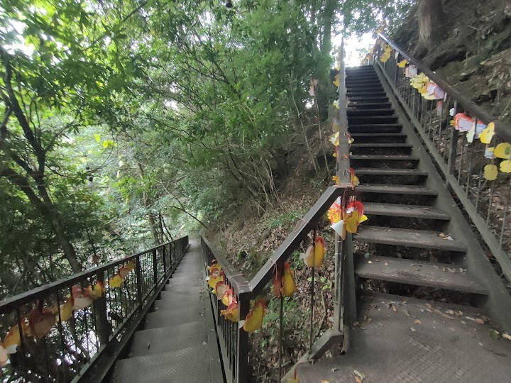
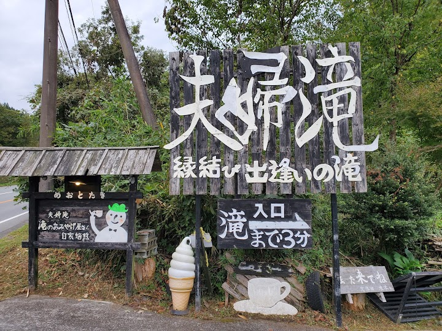
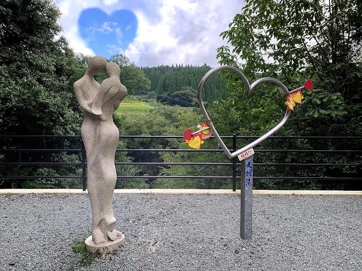
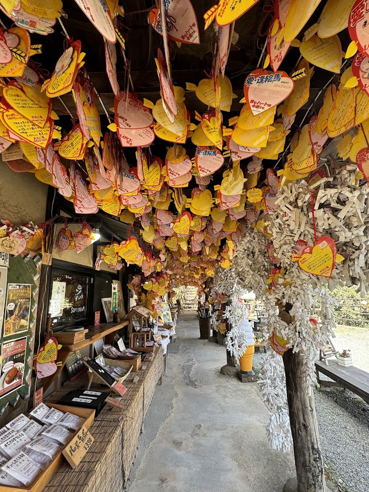

Meoto Falls
Meoto Falls takes its name from the Japanese word for a married couple, and is a scenic waterfall in the Aso area. One visitor liked it enough to visit twice in a day; check the correct map pin before you set off.
Open in Google Maps (street view, more photos and reviews there)






Visitor tips on finding it and getting there
Visited end June 2025. Great place and I went there two times on same day! Beautiful. Remember not to pin Meoto Fall in google map as you will end up in a shop parking lot. It is free and the owner gratefully said please patronize something for parking here and also for using the toilet. The fall is just behind his shop. You could also park at the Meoto Falls parking lot ( that is where you should tag in Google) and it takes about five minutes walk to the entrance of the fall. Beautiful and must visit. Two waterfalls with nice views surrounding. If you cannot handle stairs, this place is not s
Beautiful hidden place with two waterfalls (technically three, there's a small one downstream). Its associated with love and lovers. Got engaged here and it was a nice and quiet place for it. Beautiful for pictures. Very scenic and peaceful to just hangout and relax. Might have to talk a little louder due to the waterfall sound but not an issue. There's a nice store at the beginning of the stairs where you can buy love hearts to write and leave there or have a nice drink or get souvenirs. There are stairs down to the spot but it's not a difficult climb down or up. Well structured. Parking migh
Free parking, free entrance. The water was swift, not suggest to walk into the flow for taking photos. Actually there was only one spot where around 3 x 3 meters square next to the falls for watching the natural creature. Closing to the Aso area, you can plan to go here if you are travelling around Aso. Would be great if you come at morning time.